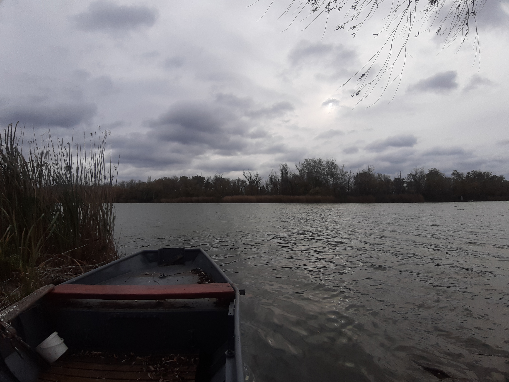
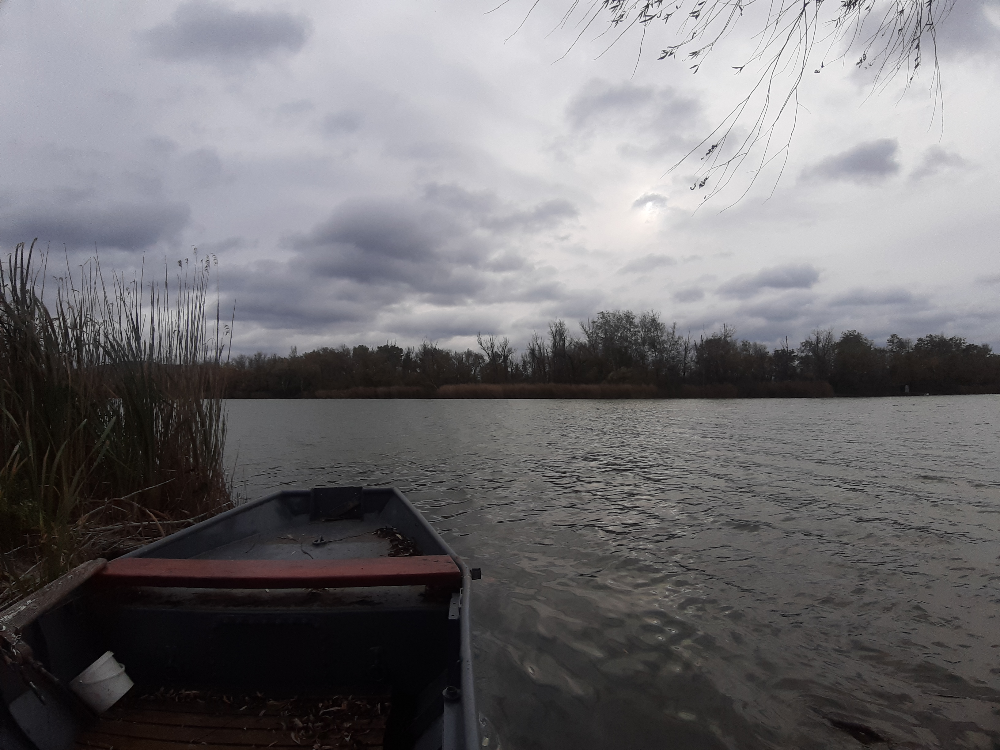
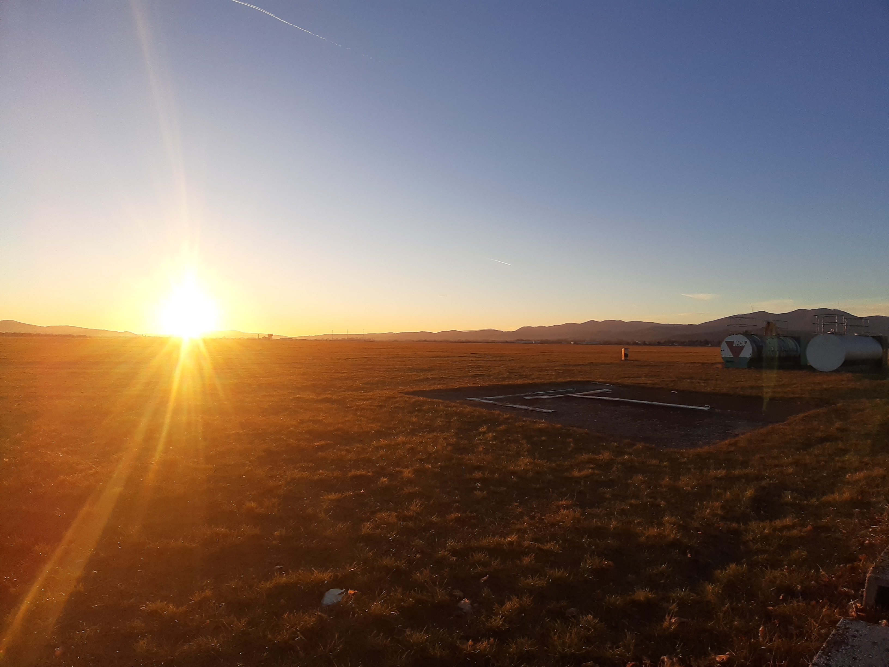
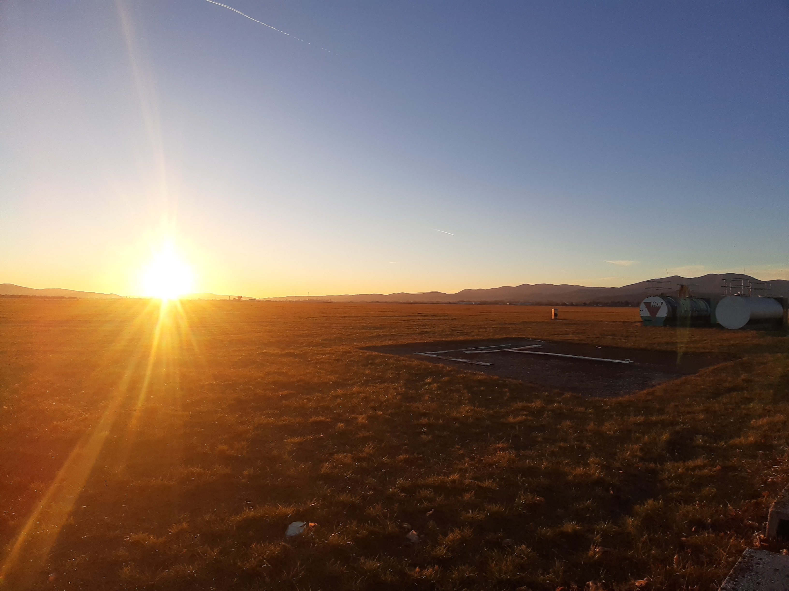

Svojho času zariadenie s jedným z najlepších pomerov cena výkon. Jeho pýchou je trojitý fotoaparát na zadnej strane, ktorý sa pri tomto modeli vyskytuje prvýkrát v histórií spoločnosti Samsung. Používateľ si môže užiť aj Infinity displej, ktorý poskytuje Full HD rozlíšenie. Výkon 8-jadrového procesora, batéria a úložisko taktiež nebudú spôsobovať žiadne problémy ani z dlhodobejšieho hľadiska. Disponuje funkciami ako App Pair, ktorá umožní vidieť na obrazovke dva programy naraz alebo nahrávanie obrazovky a long screenshot.
Diznajnovo je to veľmi jemný a jednoduchý no zároveň veľmi elegantný telefón. Väčšinou sa vyrába s intenzívnym odtieňom modrej farby, avšak existuje aj čierny a zlatý variant. Je to celkovo trochu väčší telefón, čo nám ponúka aj príjemnejší zážitok z Full HD rozlíšenia. Stále dobre padne do ruky, obzvlášť s jeho senzorom otlačku prsta na boku.
Galaxy A7 má na zadnej strane 3 objektívy: primárny, ultraširokouhlý objektív, ktorý má 120-stupňový zorný uhol a dodatočný, ktorý pomáha pri hĺbkovej detekcií pri portrétoch. Fotoaparát nám ponúka inteligentný systém, ktorý automaticky pracuje so sýtosťou, vyvážením farieb a jasom. Má 19 modelov prispôsobenia, ktoré našim fotkám pridávajú prirodzenosť, akú chceme dostať (food, city street, nightview, person, text...). Video vie nahrávať pri 1080p/30fps, pričom bit rate je 17MB za sekundu. Audio sa nahráva pri 256kb za sekundu. Obraz so zvukom sú vysokej kvality, hlavne s ohľadom na cenu, taktiež je prítomná stabilizácia videa, ktorá funguje uspokojivo. Dá sa nahrávať aj pri ultraširokouhlom móde a v tejto oblasti bol svojho času Galaxy A7 jednou z vlajkových lodí. Prítomné sú aj funkcie ako časozber a spomalené video.
"Na svoj vek veľmi kvalitný mobil, najviac sa mi páči, že aj po troch rokoch s nim nemám žiadne problémy, výkon má ako nový. Má obrovské úložisko, fotoaparát je veľmi uspokojivý a má bohatú škálu rôznych funkcií. Určite nezaostáva za extrémnym tempom technologického pokroku v žiadnom ohľade."
"Aj napriek dátumu vydania patrí tento mobil medzi najlepšie kúsky za strednú triedu. Slušný dizajn, Android pracuje svižne nič neseká, všetko šlape, čítačka prstov je dostatočne rýchla, jedine mikrofón je uložený na spodku, tak niekedy ho nechcene zatlmím rukou ale to je maličkosť inak výborný telefón.
"Zadný fotoaparát s režimami - živé zaostrenie, hyperčas, slowmotion atď. Výborný displej, rýchlo, odomknutie s čítačkou prstov, 64GB internej pamäte + SD karta, režim jednou rukou. Avšak chýba USB C a používa sa starší model, keď však prihliadneme k cene je to super."

 

 
